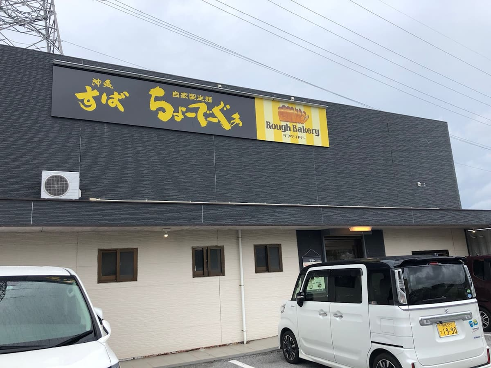
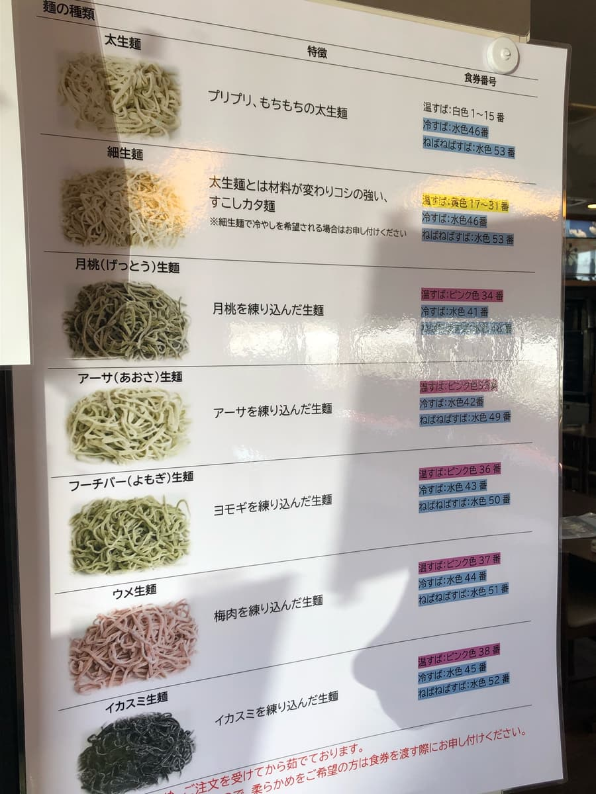
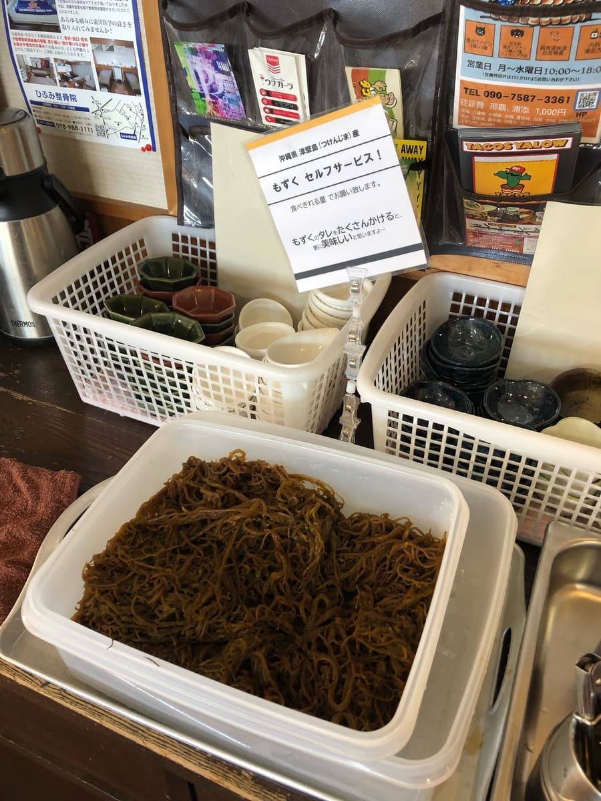
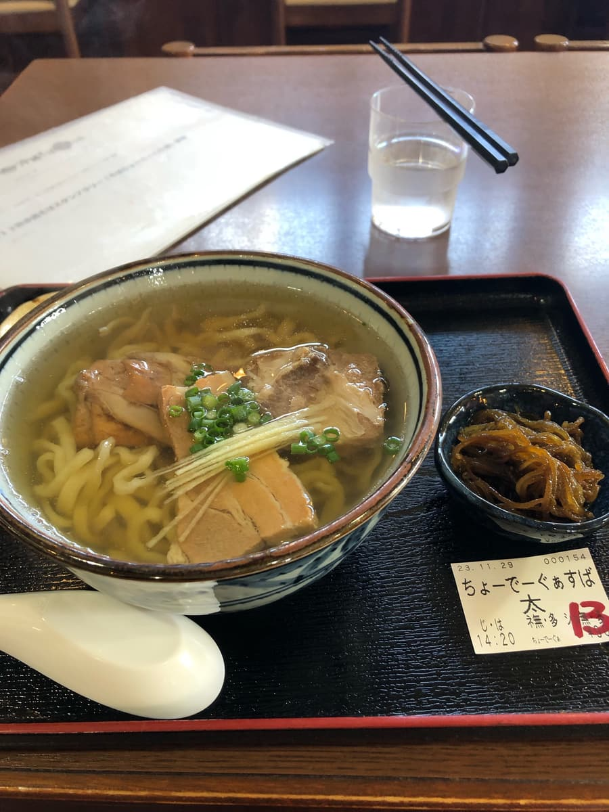
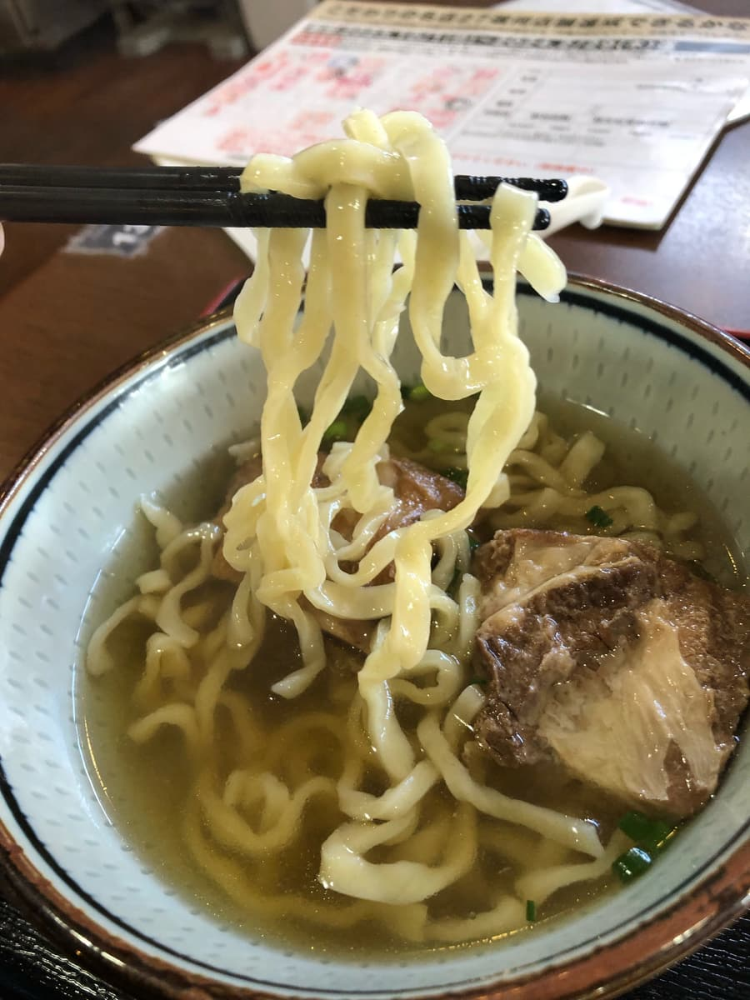
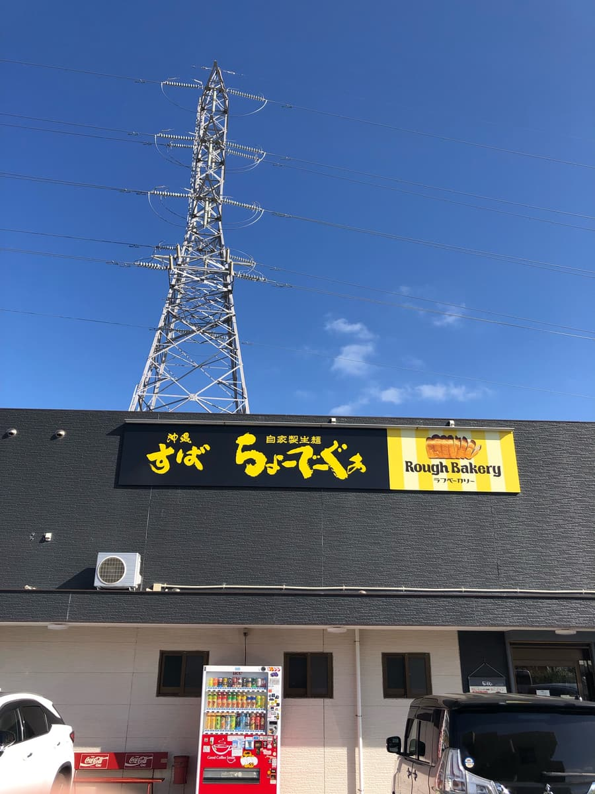
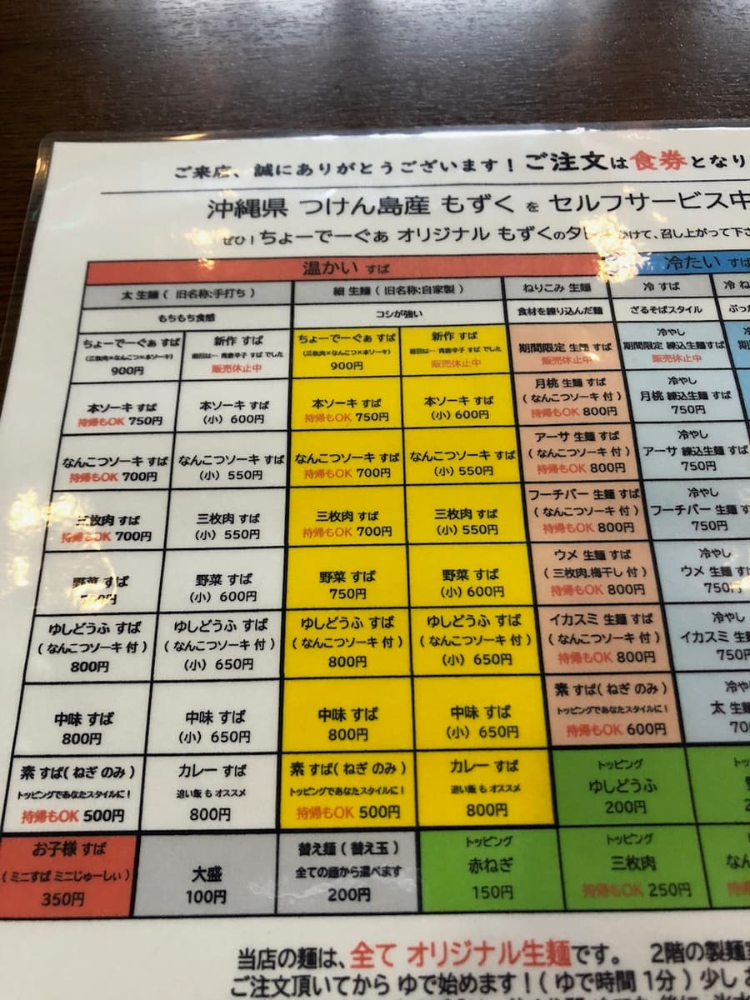
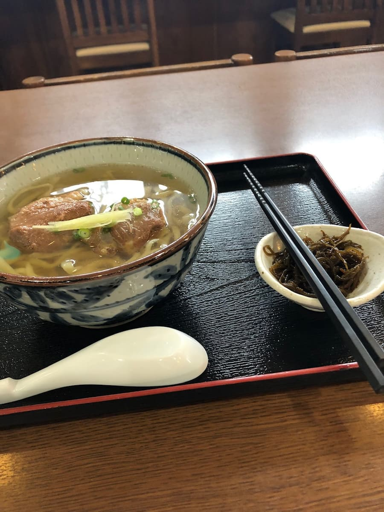

― 2回目の訪問（2023年11月） ―
2023.11に食べました。こちらのお店は「第13回沖縄そばスタンプラリー（2023.10.1～2024.2.29）」の参加店で、24店舗目/34店舗として行きました😊
こちらのお店は1年ちょっと前に食べていて、沖縄本島すべての沖縄そば屋を制覇したいと思っているので、2回目はなるべく行きたくないのですが、今回はスタンプラリーゲットのため再度訪れた感じです😁

今回はスタンプラリー冊子で紹介されている「ちょーでーぐぁすば（あっさり）」を注文。こちらも食券機は現金オンリーなので早くキャッシュレス対応してほしいですね😄

食券機で「ちょーでーぐぁすば（あっさり）」を購入後、横に麺の説明板があり、前回は「太生麺」を頂いたので、他の麺の種類を選びたかったのですが、店員に食券を渡すと何も聞かれずにそのままオーダーが入ってしまった(^0^;)
どうやら「ちょーでーぐぁすば（あっさり）」は麺の種類が決まっているようです。
待っている間、店員から「もずく」をセルフで取ることを進められる。
こちらのお店は「うるま市津堅島（っけんじま）」産のもずくがサービスにありましたね😁


もずくを何回かおかわりで食べていると、「ちょーでーぐぁすば」来ました😄 食券にも書いていましたが、麺はやっぱり「太生麺」になっているんですね(^0^;)
まずはスープを一飲み。透明なスープは那覇市の「けんぱーのすばやー」さんを思い出しますね😁
スープは鰹出汁が効いた優しい味に仕上がっています。普通に美味しいですね。

次に麺を頂き。1回目の記事でも書きましたが、太生麺はもちもち感もありますが、腰が強めで固めな感じです。こちらの麺は好き嫌いの好みがあるのかなーと感じます。
具の三枚肉、軟骨ソーキ、本ソーキはあっさり系の味付けになっています。柔らかいのですが、少し筋感があります。
評価（9.5点/15点）：普通に美味しいですが、麺は少し固めで好みが分かれるかもです。スープは鰹出汁が効いた優しい味で美味しいですが、具はあっさり系で少し筋感があるかなという感じです。
麺 ：★★★☆☆（3）
スープ：★★★✬☆（3.5）
具 ：★★★☆☆（3）
― 1回目の訪問（2022年7月） ―
2022.7に食べに行きました😊 看板から自家製生麺が売りのように思いました。



「なんこつソーキすば」を注文。生麺は太麺、細麺からタイプ選べ、「もちもち食感」と説明されていた「太麺」を選択。
細麺より腰が弱めと聞きましたが、太麺でも結構腰が強い😁
透明な鰹出汁のスープと合いますが、人によっては麺が硬めと思われる方もいると思います。津堅島産のもずくのサービスは特徴ありますね😊
評価（9点/15点）：普通に美味しいですが、「もちもち食感」と説明されていた生太麺でも結構腰強めで噛みごたえが固めでしたので、コシが強いと説明されている細生麺はもっと硬いと思われますので、硬め系が好きな方は如何でしょうか？
麺 ：★★★☆☆（3）
スープ：★★★☆☆（3）
具 ：★★★☆☆（3）